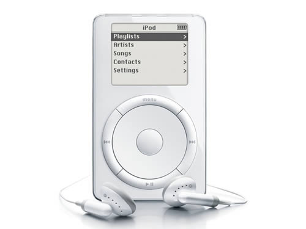

the Present
An anonymous Apple employee revealed to the Bloomberg media publication that the opening of a Tokyo, Japan store is planned for 2014. The construction of the store will be completed in February 2014, but as of August 29, 2013 Apple's Tokyo-based spokesman has not made any comments to the media. A Japanese analyst has stated, "For Apple, the Japanese market is appealing in terms of quantity and price. There is room to expand tablet sales and a possibility the Japanese market expands if Apple’s mobile carrier partners increase.[155] On October 1, 2013, Apple India executives unveiled a plan to expand further into the Indian market, following Cook's acknowledgment of the country in July 2013 when sales results showed that iPhone sales in India grew 400% during the second quarter of 2013.[156]
Apple Inc. reported that the company sold 51 million iPhones in the Q1 of 2014 (an all-time quarterly record), compared to 47.8 million in the year-ago quarter. Apple also sold 26 million iPads during the quarter, also an all-time quarterly record, compared to 22.9 million in the year-ago quarter. The Company sold 4.8 million Macs, compared to 4.1 million in the year-ago quarter.[157] On May 28, 2014, Apple confirmed its intent to acquire Dr. Dre and Jimmy Iovine's audio company Beats Electronics—producer of the Beats by Dr. Dre line of headphones and speaker products, and operator of the music streaming service Beats Music—for $3 billion, and to sell their products through Apple's retail outlets and resellers. Iovine felt that Beats had always "belonged" with Apple, as the company modeled itself after Apple's "unmatched ability to marry culture and technology."[158][159][160] In August 2014 an Apple representative confirmed to the media that Anand Lal Shimpi, editor and publisher of the AnandTech website, had been recruited by Apple without elaborating on Lal Shimpi's role.[
.
| iMacApple began developing a computer for personal use. By the graphical user interface (GUI) to use on the computer. Em volo volor a nobita conectur? Bus apitatia nihic toreriatem ius a qui doloresseque expel magnist ressit ilit del ent.Bus apitatia nihic toreriatem ius a qui doloresseque expel magnist ressit ilit del ent.Bus apitatia. |